Zhe XuPh.D. Candidate
ERB 1107 |
|


Biography [CV]
I am currently a Ph.D. student at The Chinese University of Hong Kong under the supervision of Raymond Tong, supported by Hong Kong PhD Fellowship Scheme (HKPFS). I got my Ph.D. from the Department of Computer Science and Engineering, The Chinese University of Hong Kong, supervised by Prof. Pheng-Ann Heng. Before that, I finished my master in School of Biomedical Engineering, Health Science Center, Shenzhen University, supervised by Prof. Dong Ni. I finished my undergraduate with top rank and National Scholarship in the Department of Biomedical Engineering, South-Central University for Nationalities. During my master period, I was offered the chance to visit the IDEA Lab, UNC-Chapel Hill, and supervised by Prof. Dinggang Shen. During my PhD period, I got the ORAP Scholarship and got a visiting chance in Cardiac Magnetic Resonance Center, Harvard Medical School.
My research interest includes medical image computing, intelligent ultrasound, cardiac image analysis and computer graphics.
News
- [07/2021] I was invited as Review Editor in Frontiers in Radiology-Artificial Intelligence in Radiology.
- [07/2021] I was invited by Prof. Xiaoying Tang to share our recent work in the College of Engineering, Southern University of Science and Technology.
- [06/2021] Our MICCAI extension paper about NAS based multi-modality breast ultrasound fusion was accepted by Medical Image Analysis.
- [06/2021] Three papers were accepted by MICCAI 2021 (one early accepted).
- [06/2021] Our paper on ultrasound diagnosis of infant developmental dysplasia of the hip (DDH) was accepted by IEEE JBHI. Congratulations to Xindi HU!
- [06/2021] Our paper about Multi-Centre/Vendor/Disease Cardiac Segmentation Challenge was accepted by IEEE TMI.
- [05/2021] I was invited as the PC Member and Reviewer for the Workshop on Machine Learning in Medical Imaging (MLMI), MICCAI 2021.
- [05/2021] Our MICCAI extension paper about neural architecture search in RL was accepted by Medical Image Analysis.
- [05/2021] Our paper on meta-learning for landmark detection was accepted by IEEE JBHI.
- [05/2021] Our MICCAI extension paper on 3D ovarian ultrasound segmentation was accepted by Medical Image Analysis.
- [04/2021] Invited as a Program Committee for ICCV 2021 Workshop on Computer Vision for Automated Medical Diagnosis.
- [03/2021] Our MICCAI extension paper on Reinforcement Learning based 3D plane detection was accepted by IEEE TMI.
- [02/2021] I was awarded the Distinguished Reviewer Certificate (Bronze Level) by IEEE TMI. Thanks!
- [01/2021] Our paper about fast style transfer based robust ultrasound image segmentation was accepted as Oral by IEEE ISBI.
- [12/2020] Our paper about lung ultrasound based COVID-19 assessment was accepted by Medical Image Analysis.
- [11/2020] Our paper about cortical plate segmentation in fetal MRI was accepted by IEEE TMI.
- [09/2020] Our paper about left atrial segmentation Challenge was accepted by Medical Image Analysis.
- [08/2020] Our paper about fundus image segmentation on unseen domains was accepted by IEEE TMI.
- [07/2020] I was offered the opportunity to give a presentation about DNN robustness on MICS-2020, Dalian, China [Video].
- [06/2020] Our paper about follicle monitoring in clinical ultrasound study has been accepted by UMB.
- [06/2020] Four papers were accepted by MICCAI 2020 (three early accepted).
- [05/2020] Our paper about uncertainty-based cross-domain medical image segmentation was accepted by Medical Image Analysis.
- [02/2020] Our paper about fetal head segmentation in 3D ultrasound was accepted by Computer Methods and Programs in Biomedicine.
- [01/2020] Three papers about ultrasound image segmentation, synthesis and detection were accepted by ISBI 2020.
- [10/2019] Our paper about 2D ovary and follicle ultrasound image segmentation was accepted by IEEE JBHI.
- [08/2019] Our conference extension paper about 3D breast ultrasound (ABUS) analysis was accepted by IEEE TMI.
- [07/2019] Our MMWHS 2017 Challenge paper was accepted by Medical Image Analysis.
- [07/2019] Three papers were accepted by MICCAI 2019 (two early accepted with one oral (3%)).
- [06/2019] Finish my Ph.D. defense on 11-June-2019. Thanks.
- [04/2019] Our work about attentative learning for prostate segmentation in 3D ultrasound was accepted by IEEE TMI.
- [03/2019] Our work about fetal femur segmentation and landmark detection in 3D ultrasound was accepted by the conference IEEE BHI 2019.
- [02/2019] Our work about optic disc and cup segmentation in fundus images was accepted by IEEE TMI.
- [09/2018] Our teams from CUHK, Tencent YouTu and Shenzhen Univ. won the second and third prizes out of 27 competitors in 2018 Atrial Segmentation Challenge.
- [08/2018] Start my internship in Cardiovascular MR Center, Harvard BIDMC, supervised by Prof. Reza Nezafat.
- [07/2018] Our conference extension paper about 3D prenatal ultrasound segmentation was accepted by IEEE TMI.
- [05/2018] Three papers were early accepted by MICCAI 2018.
- [04/2018] The ACDC Challenge paper was accepted by IEEE TMI. Automated Cardiac Diagnosis Challenge (ACDC).
- [03/2018] I was offered with the scholarship Overseas Research Attachment Programme for PhD Students (ORAP) from the Engineering Department, CUHK.
- [07/2017] Our team won the second place in CT image segmentation section in MM-WHS 2017: Multi-Modality Whole Heart Segmentation Challenge.
- [05/2017] Two papers (One oral) were accepted to MICCAI 2017.
- [12/2016] We are keeping the first record on the MICCAI Grand Challenge: Prostate MR Image Segmentation 2012.
- [10/2016] Our team won the Whole-Heart and Great Vessel Segmentation Challenge.
Selected Publications | Google Scholar
| /*2021*/ | |
| 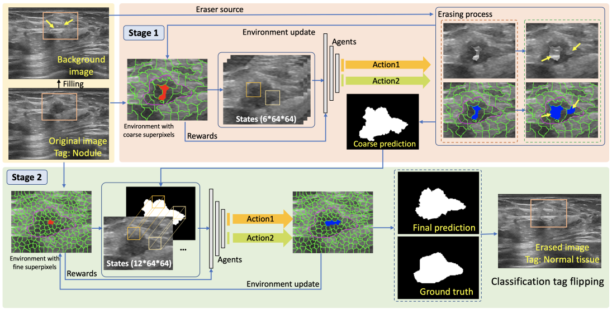 |
Flip Learning: Erase to Segment Yuhao Huang*, Xin Yang*, Yuxin Zou, Chaoyu Chen, Jian Wang, Haoran Dou, Nishant Ravikumar, Alejandro F Frangi, Jianqiao Zhou, Dong Ni# |
| 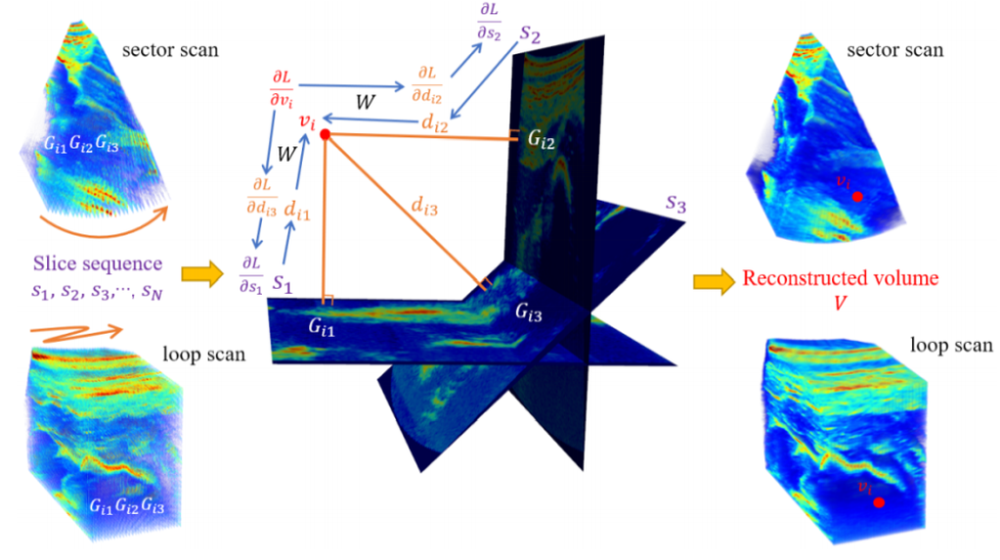 |
Self Context and Shape Prior for Sensorless Freehand 3D Ultrasound Reconstruction Mingyuan Luo*, Xin Yang*, Xiaoqiong Huang, Yuhao Huang, Yuxin Zou, Xindi Hu, Nishant Ravikumar, Alejandro F Frangi, Dong Ni# |
| 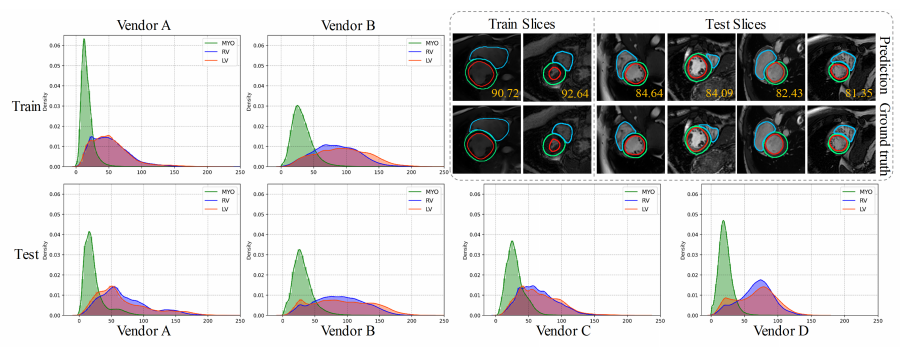 |
Style Curriculum Learning for Robust Medical Image Segmentation Zhendong Liu*, Van Manh*, Xin Yang, Xiaoqiong Huang, Karim Lekadir, Víctor Campello, Nishant Ravikumar, Alejandro F Frangi, Dong Ni# |
| 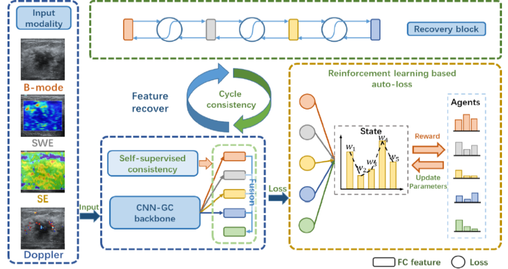 |
AW3M: An Auto-weighting and Recovery framework for Breast Cancer Diagnosis using Multi-modal Ultrasound Ruobing Huang*, Zehui Lin*, Haoran Dou, Jian Wang, Juzheng Miao, Guangquan Zhou, Xiaohong Jia, Wenwen Xu, Zihan Mei, Yijie Dong, Xin Yang#, Jianqiao Zhou#, Dong Ni#. |
| 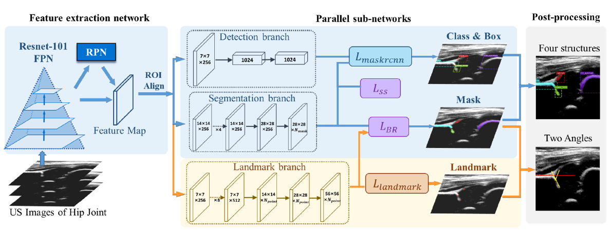 |
Joint Landmark and Structure Learning for Automatic Evaluation of Developmental Dysplasia of the Hip Xindi Hu, Limin Wang, Xin Yang, Xu Zhou, Wufeng Xue, Shengfeng Liu, Yan Cao, Yuhao Huang, Shuangping Guo, Ning Shang, Dong Ni, and Ning Gu. |
| 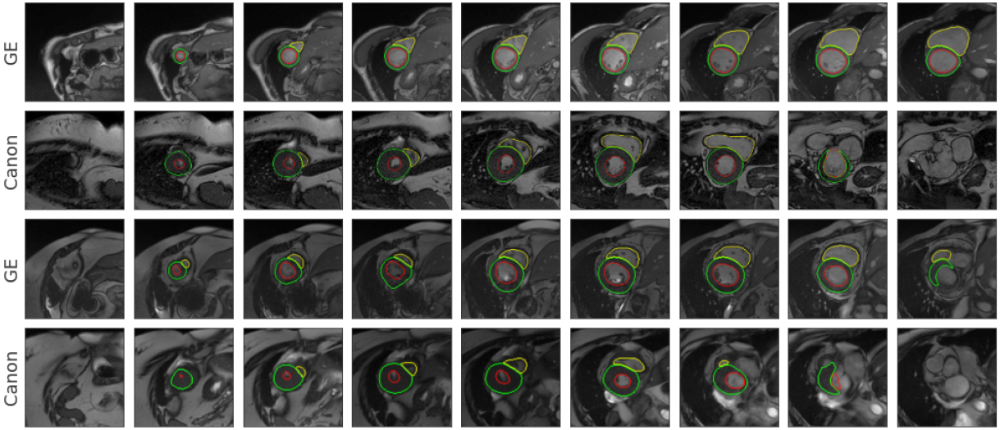 |
Multi-Centre, Multi-Vendor and Multi-Disease Cardiac Segmentation: The M&Ms Challenge Victor M. Campello, Polyxeni Gkontra, Cristian Izquierdo, Xiaoqiong Huang, Xin Yang, Lei Li, Xiahai Zhuang, Karim Lekadir and et al.. |
| 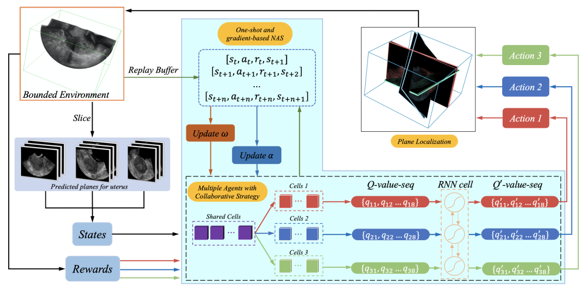 |
Searching Collaborative Agents for Multi-plane Localization in 3D Ultrasound Xin Yang*, Yuhao Huang*, Ruobing Huang, Haoran Dou, Rui Li, Jikuan Qian, Xiaoqiong Huang, Wenlong Shi, Chaoyu Chen, Yuanji Zhang, Haixia Wang, Yi Xiong, Dong Ni. |

|
Learn Fine-grained Adaptive Loss for Multiple Anatomical Landmark Detection in Medical Images Guangquan Zhou*, Juzheng Miao, Xin Yang*, Rui Li, En-Ze Huo, Wenlong Shi, Yuhao Huang, Jikuan Qian, Chaoyu Chen, Dong Ni*. |
| 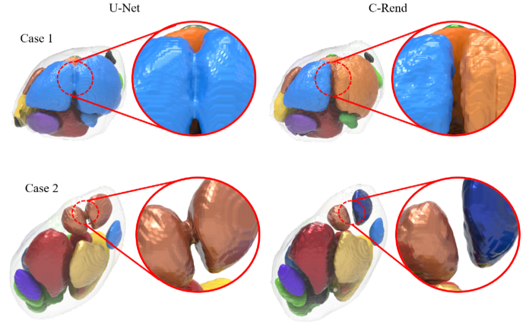 |
Contrastive Rendering with Semi-supervised Learning for Ovary and Follicle Segmentation from 3D Ultrasound Xin Yang*, Haoming Li*, Xu Zhou, Yi Wang, Xiaowen Liang, Chaoyu Chen, Fengyi Zeng, Jinghui Fang, Alejandro Frangi, Zhiyi Chen, Dong Ni. |
| 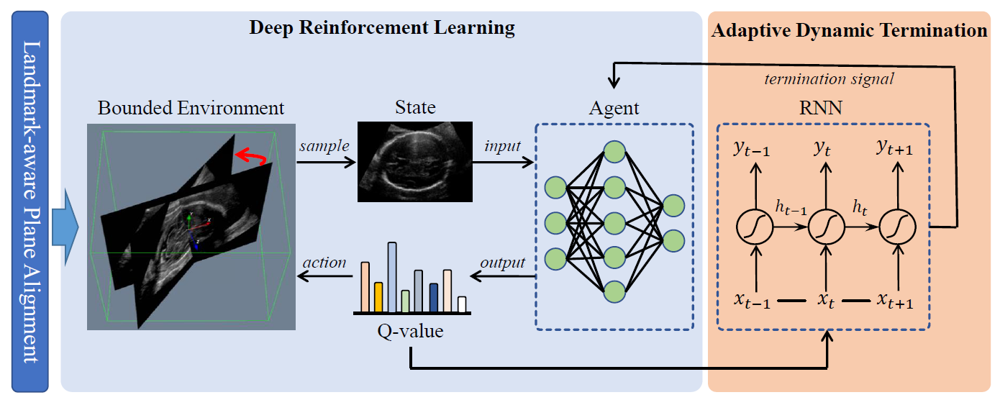 |
Agent with Warm Start and Adaptive Dynamic Termination for Plane Localization in 3D Ultrasound Xin Yang*, Haoran Dou*, Ruobing Huang, Wufeng Xue, Yuhao Huang, Jikuan Qian, Yuanji Zhang, Huanjia Luo, Huizhi Guo, Tianfu Wang, Yi Xiong, Dong Ni. |
| 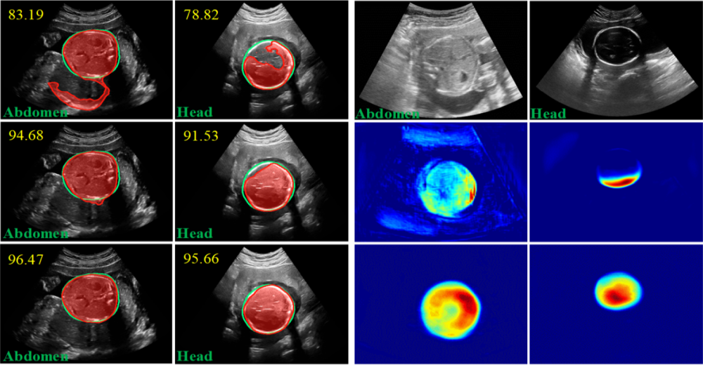 |
Generalize Ultrasound Image Segmentation via Instant and Plug-Play Style Transfer Zhendong Liu*, Xiaoqiong Huang*, Xin Yang, Rui Gao, Rui Li, Yuanji Zhang, Yankai Huang, Guangquan Zhou, Yi Xiong, Alejandro Frangi, Dong Ni. IEEE ISBI (Oral), 2021. [paper] |
| /*2020*/ | |
| 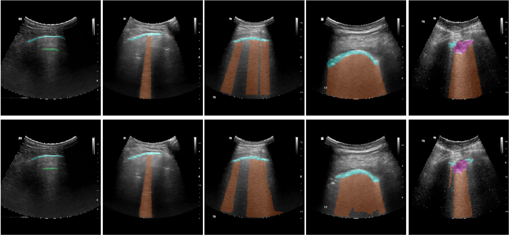 |
Modality Alignment Contrastive Learning for Severity Assessment of COVID-19 from Lung Ultrasound and Clinical Information Wufeng Xue, Chunyan Cao, Jie Liu, Yilian Duan, Haiyan Cao, Jian Wang, Xumin Tao, Zejian chen, Meng Wue, Jinxiang Zhang, Hui Sung, Yang Jin, Xin Yang, Li Zhang, Dong Ni and Mingxing Xie. Medical Image Analysis, 2020. [paper] |
| 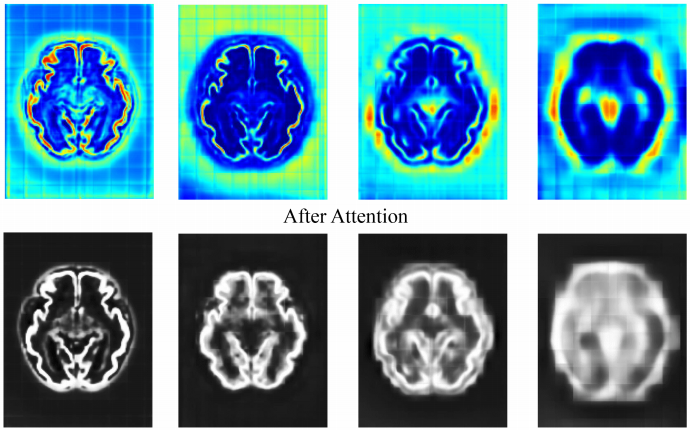 |
A Deep Attentive Convolutional Neural Network for Automatic Cortical Plate Segmentation in Fetal MRI Haoran Dou, Davood Karimi, Caitlin K. Rollins, Cynthia M. Ortinau, Lana Vasung, Clemente Velasco-Annis, Abdelhakim Ouaalam, Xin Yang, Dong Ni, Ali Gholipour. |

|
Style-invariant Cardiac Image Segmentation with Test-time Augmentation Xiaoqiong Huang*, Zejian Chen*, Xin Yang, Zhendong Liu, Yuxin Zou, Mingyuan Luo, Wufeng Xue, Dong Ni. |
| 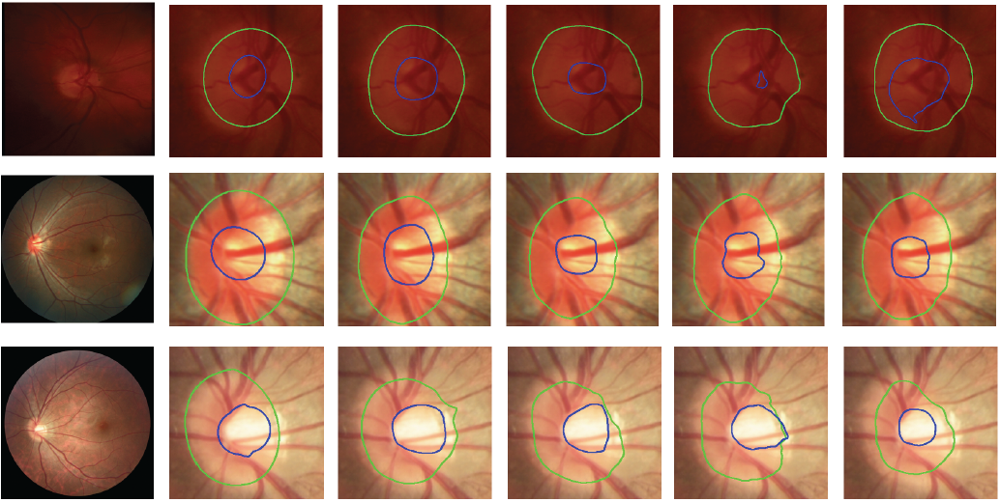 |
DoFE: Domain-oriented Feature Embedding for Generalizable Fundus Image Segmentation on Unseen Datasets Shujun Wang, Lequan Yu, Kang Li, Xin Yang, Chi-Wing Fu, Pheng-Ann Heng. |
| 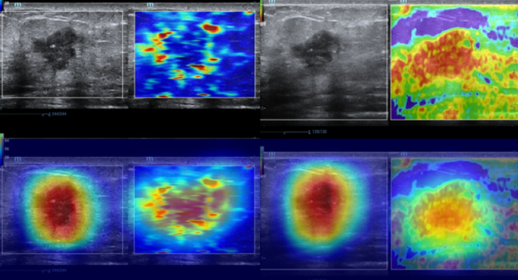 |
Auto-weighting for Breast Cancer Classification in Multimodal Ultrasound Wang Jian*, Miao Juzheng*, Yang Xin, Li Rui, Zhou Guangquan, Huang Yuhao, Lin Zehui, Xue Wufeng, Jia Xiaohong, Zhou Jianqiao, Huang Ruobing, Ni Dong. MICCAI, 2020. [paper] |
| 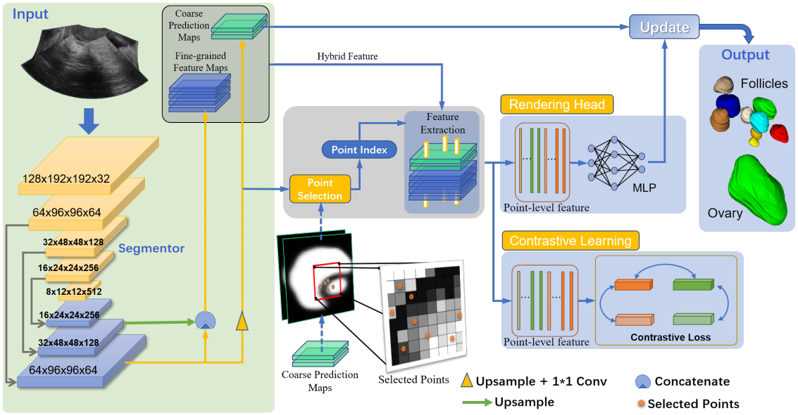 |
Contrastive Rendering for Ultrasound Image Segmentation Haoming Li*, Xin Yang*, Jiamin Liang, Wenlong Shi, Chaoyu Chen, Haoran Dou, Rui Li, Rui Gao, Guangquan Zhou, Jinghui Fang, Xiaowen Liang, Ruobing Huang, Alejandro Frangi, Zhiyi Chen, Dong Ni. MICCAI, 2020. [paper] |
| 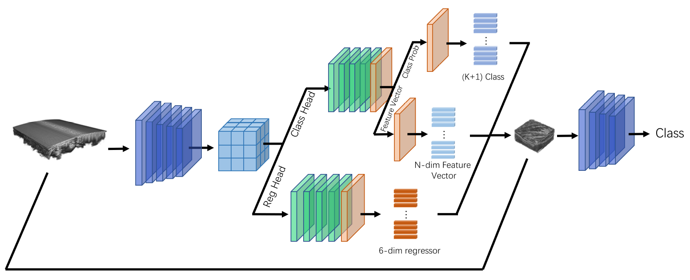 |
Computer-aided Tumor Diagnosis in Automated Breast Ultrasound using 3D Detection Network Junxiong Yu*, Chaoyu Chen*, Xin Yang, Yi Wang, Dan Yan, Jianxing Zhang, Dong Ni. MICCAI, 2020. [paper] |

|
Searching Collaborative Agents for Multi-plane Localization in 3D Ultrasound Yuhao Huang*, Xin Yang*, Rui Li, Jikuan Qian, Xiaoqiong Huang, Wenlong Shi, Haoran Dou, Chaoyu Chen, Yuanji Zhang, Huanjia Luo, Alejandro Frangi, Yi Xiong, Dong Ni. MICCAI, 2020. [paper] |
| 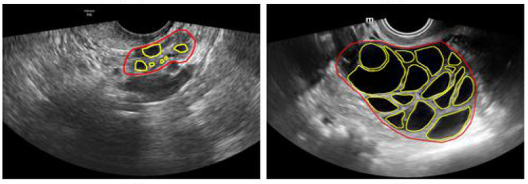 |
CR-Unet based ultrasonic follicle monitoring to reduce diameter variability, and generate area automatically as a novel biomarker for follicular maturity Xiaowen Liang, Jinghui Fang, Haoming Li, Xin Yang, Dong Ni, Fengyi Zeng, Zhiyi Chen. Ultrasound in Medicine and Biology, 2020. [paper] |
| 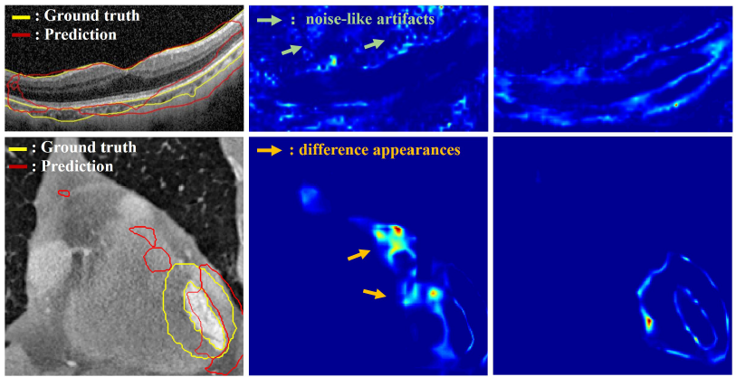 |
Uncertainty-aware Domain Alignment for Anatomical Structure Segmentation Cheng Bian*, Chenglang Yuan*, Jiexiang Wang, Meng Li, Xin Yang, Shuang Yu, Kai Ma, Jin Yuan, Yefeng Zheng. Medical Image Analysis, 2020. [paper] |
| 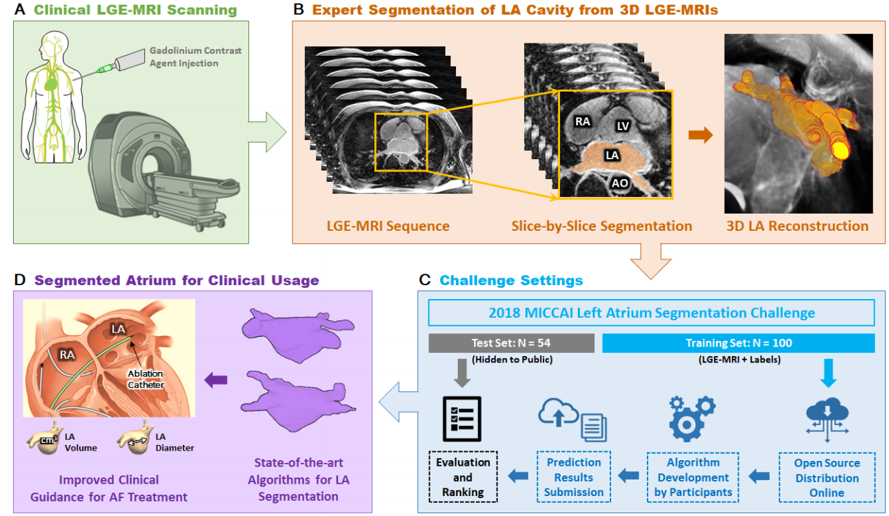 |
A Global Benchmark of Algorithms for Segmenting Late Gadolinium-Enhanced Cardiac Magnetic Resonance Imaging Zhaohan Xiong, Qing Xia, Zhiqiang Hu, Ning Huang, Cheng Bian, Yefeng Zheng, Sulaiman Vesal, Nishant Ravikumar, Andreas Maier, Xin Yang, Pheng-Ann Heng, Dong Ni, Jichao Zhao and et al. Medical Image Analysis, 2020. [paper] |
| 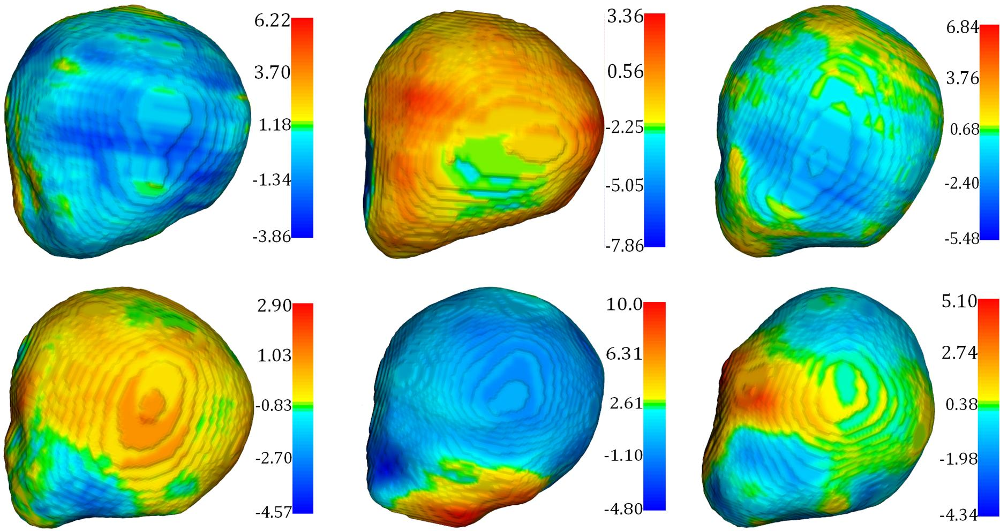 | Xin Yang*, Xu Wang*, Yi Wang, Haoran Dou, Shengli Li, Huaxuan Wen, Yi Lin, Pheng-Ann Heng, Dong Ni. "Hybrid Attention for Automatic Segmentation of Whole Fetal Head in Prenatal Ultrasound Volumes". Computer Methods and Programs in Biomedicine, 2020.
[paper] |
| 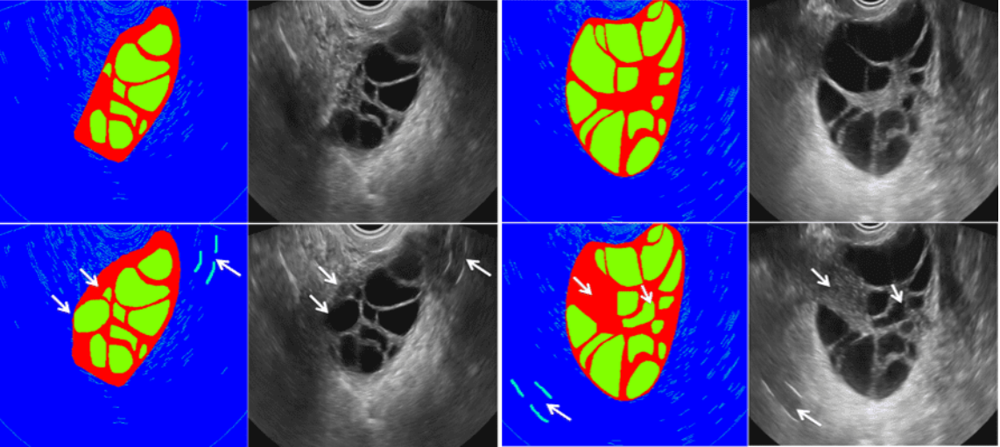 | Jiamin Liang*, Xin Yang*, Haoming Li, Yi Wang, Manh The Van, Haoran Dou, Chaoyu Chen, Jinghui Fang, Xiaowen Liang, Zixin Mai, Guowen Zhu, Zhiyi Chen, Dong Ni. "Synthesis and Edition of Ultrasound Images via Sketch Guided Progressive Growing GANs". IEEE ISBI, 2020.
[paper] |
| 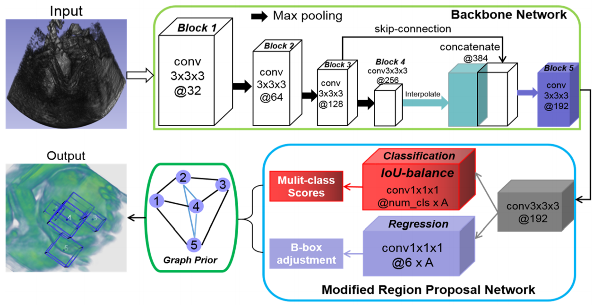 | Chaoyu Chen*, Xin Yang*, Ruobing Huang, Wenlong Shi, Shengfeng Liu, Mingrong Lin, Yuhao Huang, Yong Yang, Yuanji Zhang, Huanjia Luo, Yankai Huang, Yi Xiong, Dong Ni. "Region Proposal Network with Graph Prior and IoU-Balance Loss for Landmark Detection in 3D Ultrasound". IEEE ISBI, 2020.
[paper] |
| 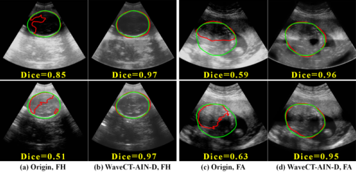 | Zhendong Liu*, Xin Yang*, Rui Gao, Shengfeng Liu, Haoran Dou, Shuangchi He, Yuhao Huang, Yankai Huang, Huanjia Luo, Yuanji Zhang, Yi Xiong, Dong Ni. "Remove Appearance Shift for Ultrasound Image Segmentation via Fast and Universal Style Transfer". IEEE ISBI, 2020.
[paper] |
| /*2019*/ | |
| Haoming Li, Jinghui Fang, Shengfeng Liu, Xiaowen Liang, Xin Yang, Zixin Mai, Manh The Van, Tianfu Wang, Zhiyi Chen and Dong Ni. "CR-Unet: A Composite Network for Ovary and Follicle Segmentation in Ultrasound". IEEE JBHI, 2019.
[paper] |
|
| 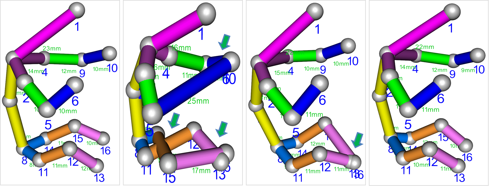 | Xin Yang, Wenlong Shi, Haoran Dou, Jikuan Qian, Yi Wang, Wufeng Xue, Shengli Li, Dong Ni, and Pheng-Ann Heng. "FetusMap: Fetal Pose Estimation in 3D Ultrasound". MICCAI, 2019.
[paper] |
| 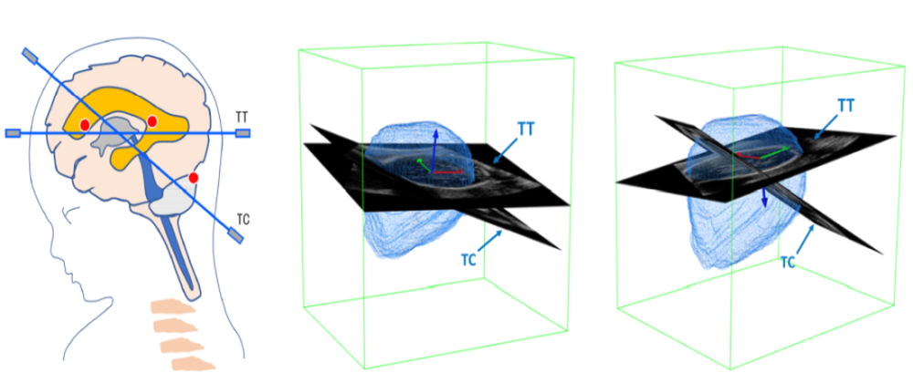 | Haoran Dou*, Xin Yang*, Jikuan Qian, Wufeng Xue, Hao Qin, Xu Wang, Lequan Yu, Shujun Wang, Yi Xiong, Pheng-Ann Heng, and Dong Ni. "Agent with Warm Start and Active Termination for Plane Localization in 3D Ultrasound". MICCAI, 2019.(Oral Presentation)
[paper][Project Homepage] [code] |

|
Jiexiang Wang, Cheng Bian, Meng Li, Xin Yang, Kai Ma, Wenao Ma, Jin Yuan, Xinghao Ding, Yefeng Zheng. "Uncertainty-Guided Domain Alignment for Layer Segmentation in OCT Images". Arxiv, 2019.
[paper] |
| 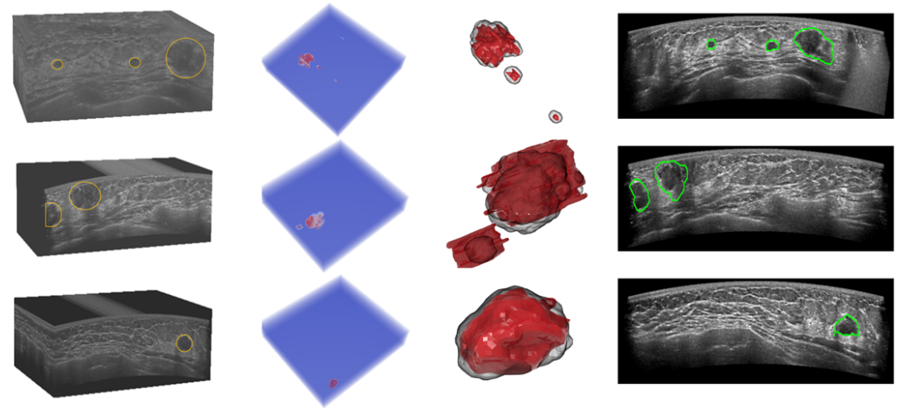 | Yi Wang, Na Wang, Min Xu, Junxiong Yu, Chenchen Qin, Xiao Luo, Xin Yang, Tianfu Wang, Anhua Li, and Dong Ni. "Deeply-Supervised Networks with Threshold Loss for Cancer Detection in Automated Breast Ultrasound". IEEE TMI, 2019.
[paper] |
| 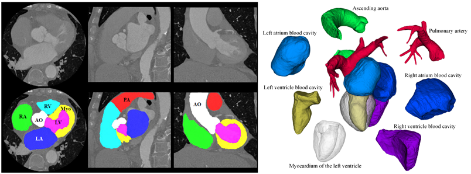 | Xiahai Zhuang, Lei Li, Christian Payer, Darko Stern, Martin Urschler, Mattias P. Heinrich, Julien Oster,
Chunliang Wang, Orjan Smedby, Cheng Bian, Xin Yang, Pheng-Ann Heng and et al. "Evaluation of Algorithms for Multi-Modality Whole Heart Segmentation: An Open-Access Grand Challenge". Medical Image Analysis, 2019.
[paper] |
| Shengfeng Liu, Yi Wang, Xin Yang, Baiying Lei, Li Liu, Shawn Xiang Li, Dong Ni, Tianfu Wang. "Deep Learning in Medical Ultrasound Analysis: A Review". Engineering, 2019.
[paper] |
|
| 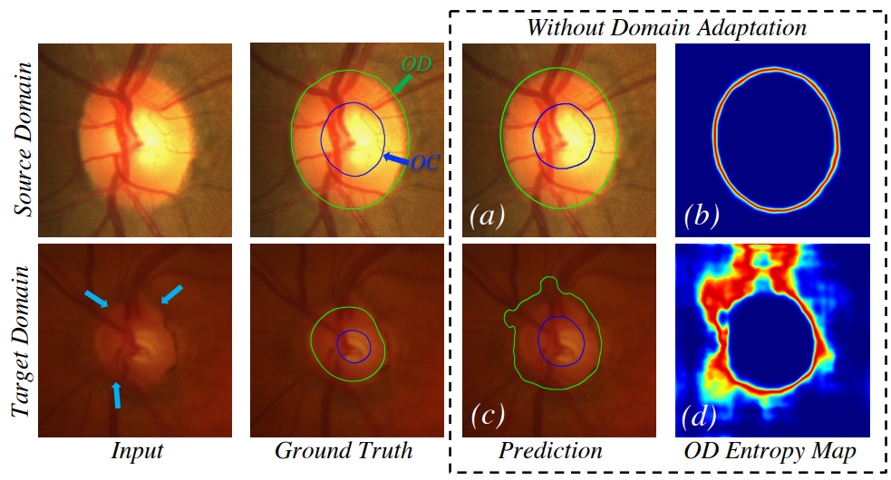 | Shujun Wang, Lequan Yu, Kang Li, Xin Yang, Chi-Wing Fu, Pheng-Ann Heng. "Boundary and Entropy-driven Adversarial Learning for Fundus Image Segmentation". MICCAI, 2019. |
| 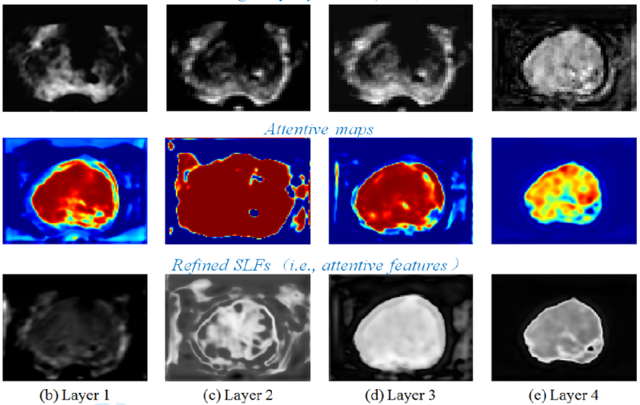 | Yi Wang, Haoran Dou, Xiaowei Hu, Lei Zhu, Xin Yang, Ming Xu, Jing Qin, Pheng-Ann Heng, Tianfu Wang, and Dong Ni. "Deep Attentive Features for Prostate Segmentation in 3D Transrectal Ultrasound". IEEE TMI, 2019.
[paper] |
| 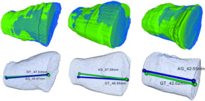 | Xu Wang, Xin Yang, Haoran Dou, Shengli Li, Pheng-Ann Heng and Dong Ni. "Joint Segmentation and Landmark Localization of Fetal Femur in Ultrasound Volumes". IEEE BHI Conference, 2019.
[paper] |

|
Shujun Wang, Lequan Yu, Xin Yang, Chi-Wing Fu, and Pheng-Ann Heng. "Patch-based Output Space Adversarial Learning for Joint Optic Disc and Cup Segmentation". IEEE TMI, 2019.
[paper] |
| /*2018*/ | |
| 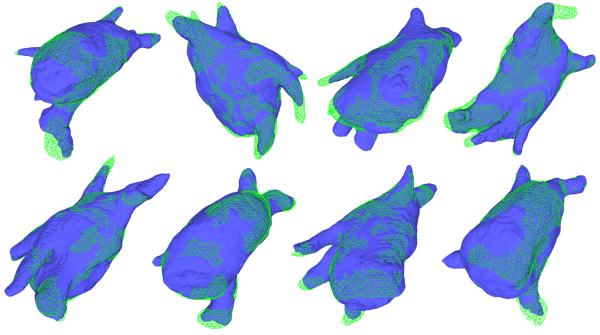 | Xin Yang, Na Wang, Yi Wang, Xu Wang, Reza Nezafat, Dong Ni, and Pheng-Ann Heng. "Combating Uncertainty with Novel Losses for Automatic Left Atrium Segmentation". Atrial Segmentation Challenge in STACOM, 2018.
[paper] |
| 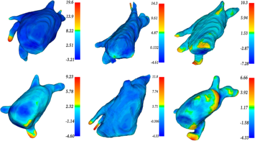 | Cheng Bian, Xin Yang, Shen Zheng, Yu-An Liu, Reza Nezafat, Pheng-Ann Heng, and Yefeng Zheng. "Pyramid Network with Online Hard Example Mining for Accurate Left Atrium Segmentation". Atrial Segmentation Challenge in STACOM, 2018.
[paper] |
| 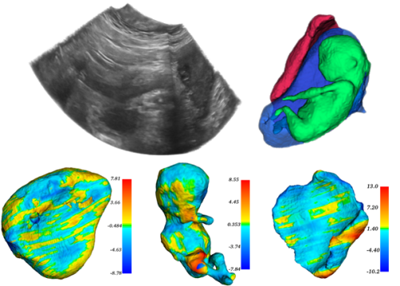 | Xin Yang, Lequan Yu, Shengli Li, Huaxuan Wen, Dandan Luo, Cheng Bian, Jing Qin, Dong Ni, and Pheng-Ann Heng. "Towards Automated Semantic Segmentation in Prenatal Volumetric Ultrasound". IEEE TMI, 2018.
[paper] |

|
Xin Yang, Haoran Dou, Ran Li, Xu Wang, Cheng Bian, Shengli Li, Dong Ni and Pheng-Ann Heng. "Generalizing Deep Models for Ultrasound Image Segmentation". MICCAI, 2018. |

|
Na Wang, Cheng Bian, Yi Wang, Min Xu, Chenchen Qin, Xin Yang, Tianfu Wang, Anhua Li, Dinggang Shen and Dong Ni. "Densely Deep Supervised Networks with Threshold Loss for Cancer Detection in Automated Breast Ultrasound". MICCAI, 2018.
[paper] |
| 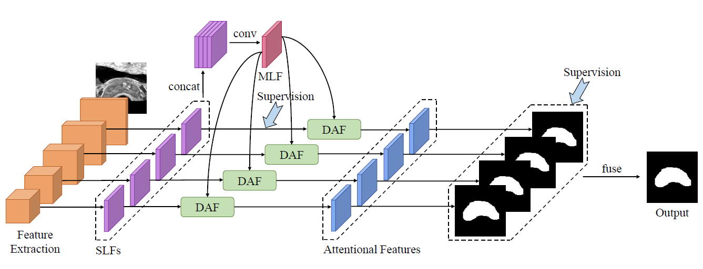 | Yi Wang, Zijun Deng, Xiaowei Hu, Lei Zhu, Xin Yang, Xuemiao Xu, Pheng-Ann Heng and Dong Ni. "Deep Attentional Features for Prostate Segmentation in Ultrasound". MICCAI, 2018. |
| 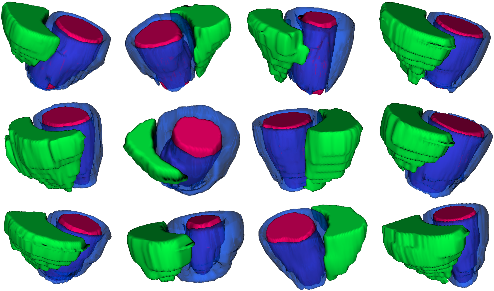 | Bernard, O., Lalande, A., Zotti, C., Cervenansky, F., Yang, X., Heng, P. A. and et al. "Deep Learning Techniques for Automatic MRI Cardiac Multi-structures Segmentation and Diagnosis: Is the Problem Solved?". IEEE TMI, 2018.
[paper] |

|
Xin Yang, Lequan Yu, Qi Dou, Jing Qin, and Pheng-Ann Heng. "Deep Convolutional Networks for Automated Volumetric Cardiovascular Image Segmentation: From a Design Perspective". Book Chapter:Cardiovascular Imaging and Image Analysis, 2018. [paper][code 1] [code 2] |
| /*2017*/ | |
| 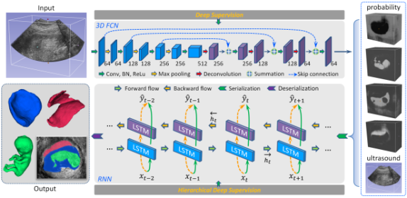 | Xin Yang, Lequan Yu, Shengli Li, Xu Wang, Na Wang, Jing Qin, Dong Ni, Pheng-Ann Heng. "Towards Automatic Semantic Segmentation in Volumetric Ultrasound" Medical Image Computing and Computer Assisted Intervention (MICCAI), 2017.(Oral Presentation)
[paper][Project Homepage] [code] |

|
Lequan Yu, Jie-Zhi Cheng, Qi Dou, Xin Yang, Hao Chen, Jing Qin, Pheng-Ann Heng. "Automatic 3D Cardiovascular MR Segmentation with Densely-Connected Volumetric ConvNets" Medical Image Computing and Computer Assisted Intervention (MICCAI), 2017. |
| 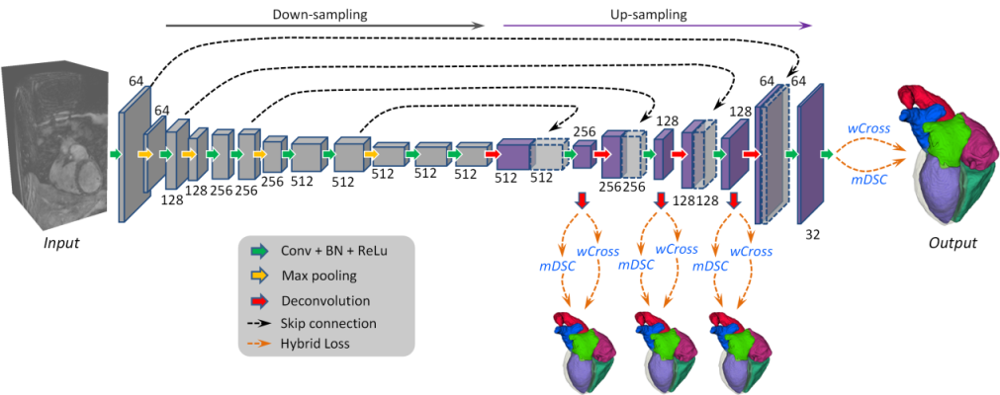 | Xin Yang, Cheng Bian, Lequan Yu, Dong Ni, Pheng-Ann Heng. "Hybrid Loss Guided Convolutional Networks for Whole Heart Parsing" MICCAI Workshop on Multi-Modality Whole Heart Segmentation (MM-WHS), 2017 (Rank Second in CT segmentation). |

|
Qi Dou, Lequan Yu, Hao Chen, Yueming Jin, Xin Yang, Jing Qin, Pheng-Ann Heng. "3D Deeply Supervised Network for Automated Segmentation of Volumetric Medical Images" Medical Image Analysis (MedIA), 2017. (The journal version of MICCAI paper) |

|
Xin Yang, Lequan Yu, Lingyun Wu, Yi Wang, Dong Ni, Jing Qin, Pheng-Ann Heng. "Fine-grained Recurrent Neural Networks for Automatic Prostate Segmentation in Ultrasound Images" Thirty-First AAAI Conference on Artificial Intelligence (AAAI), 2017.
[paper] |

|
Lequan Yu, Xin Yang, Hao Chen, Jing Qin, Pheng-Ann Heng. "Volumetric ConvNets with Mixed Residual Connections for Automated Prostate Segmentation from 3D MR Images" Thirty-First AAAI Conference on Artificial Intelligence (AAAI), 2017.
[code] [paper] [Challenge website] |
| 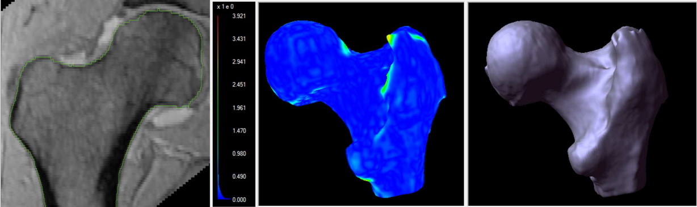 | Guodong Zeng, Xin Yang, Jing Li, Lequan Yu, Pheng-Ann Heng, and Guoyan Zheng. "3D U-net with Multi-level Deep Supervision: Fully Automatic Segmentation of Proximal Femur in 3D MR Images" MICCAI Workshop on MLMI, 2017. [paper] |
| 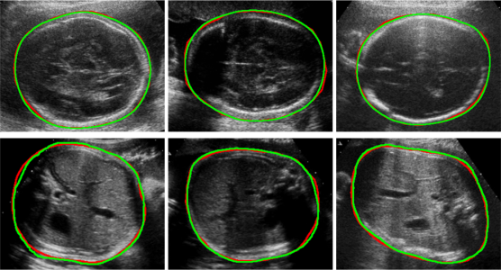 | Lingyun Wu, Xin Yang, Shengli Li, Tianfu Wang, Pheng-Ann Heng, Dong Ni. "Cascaded Fully Convolutional Networks for Automatic Prenatal Ultrasound Image Segmentation" International Symposium on Biomedical Imaging (ISBI), 2017. [paper] |
| /*2016*/ | |

|
Lequan Yu, Xin Yang, Jing Qin, Pheng-Ann Heng. "3D FractalNet: Dense Volumetric Segmentation for Cardiovascular MRI Volumes" MICCAI Workshop on Whole-Heart and Great Vessel Segmentation from 3D Cardiovascular MRI in Congenital Heart Disease (HVSMR), 2016 (Top Rank in Challenge).
[code] [paper][Challenge website] |
| /*2015*/ | |
| 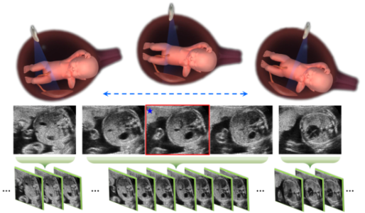 | Hao Chen, Dong Ni, Jing Qin, Shengli Li, Xin Yang, Tianfu Wang, Pheng-Ann Heng. "Standard Plane Localization in Fetal Ultrasound via Domain Transferred Deep Neural Networks" IEEE Journal of Biomedical and Health Informatics (IEEE JBHI), 2015. [paper] |
| /*2014*/ | |
| 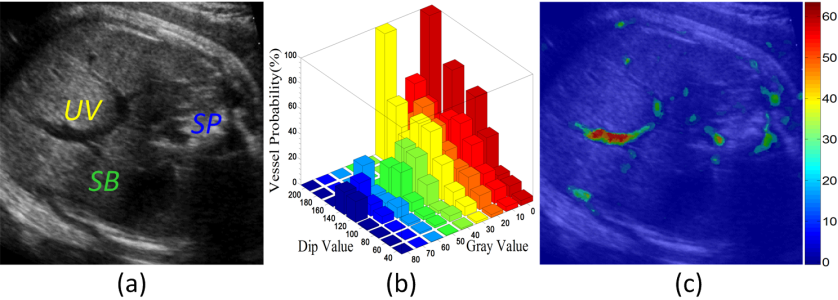 | Dong Ni, Xin Yang, Xin Chen, Chien-Ting Chin, Siping Chen, Pheng-Ann Heng, Shengli Li, Jing Qin, Tianfu Wang. "Standard Plane Localization in Ultrasound by Radial Component Model and Selective Search" Ultrasound in Medicine & Biology (UMB), 2014. [paper] [Demo Video] |
Software
| 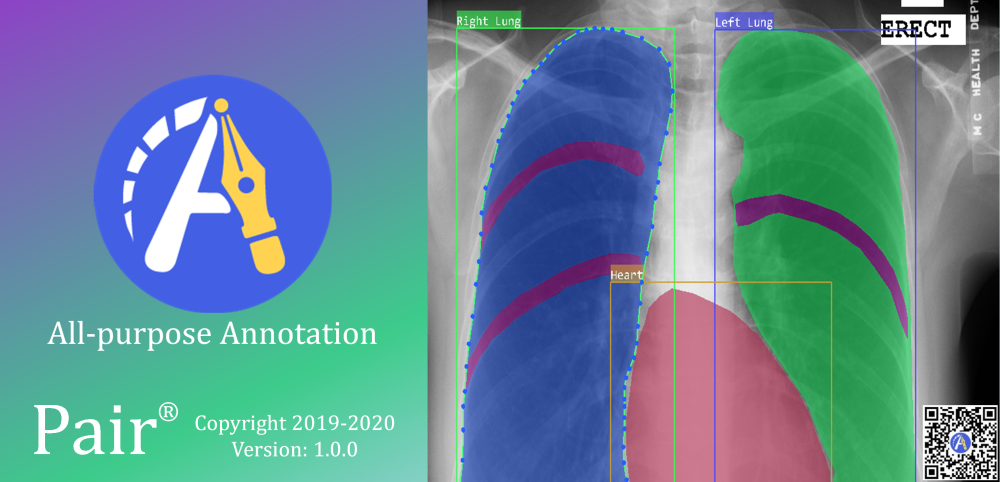 | Pair. All-purpose Annotation Software. |
Honors & Awards
| 2021, Distinguished Reviewer Certificate (Bronze Level), IEEE Transactions on Medical Imaging (TMI) |
| 2021, Shenzhen Peacock Plan, Shenzhen, China |
| 2018, Overseas Research Attachment Programme for PhD Students (ORAP), CUHK, Hong Kong, China |
| 2017, AAAI Scholarship, San Fransisco, USA |
| 2017, MedIA-MICCAI'17 Best Paper Award |
| 2017, Teaching Assistant of Merit, CUHK, Hong Kong, China |
| 2014, Tencent Founder Innovative Scholarship, Tencent, China |
| 2010, National Scholarship, China |
Professional Activities
| IEEE Student | AAAI Student |
| IEEE Journal of Biomedical and Health Informatics (IEEE JBHI) | IEEE Transactions on Medical Imaging (IEEE TMI) | IEEE Transactions on Biomedical Engineering (IEEE TBME) | IEEE TMI Special Issue on COVID-19 | Medical Image Analysis (MedIA) | Frontiers in Radiology-Artificial Intelligence in Radiology | PLOS ONE | Multimedia Systems | Scientific Reports | Computer Methods and Programs in Biomedicine (CMPB) | Ultrasonic Imaging (UI) | Computational and Mathematical Methods in Medicine |
| Medical Image Computing and Computer Assisted Intervention (MICCAI), 2017 |
| Medical Image Computing and Computer Assisted Intervention (MICCAI), 2018 |
| Medical Image Computing and Computer Assisted Intervention (MICCAI), 2019 |
| Medical Image Computing and Computer Assisted Intervention (MICCAI), 2020 |
| Medical Image Computing and Computer Assisted Intervention (MICCAI), 2021 | Program Committee of ICCV Workshop on Visual Recognition for Medical Images (VRMI), 2019 | Program Committee for ICCV Workshop on Computer Vision for Automated Medical Diagnosis (CVAMD), 2021 | Program Committee of Association for the Advancement of Artificial Intelligence (AAAI), 2020 | Program Committee of Association for the Advancement of Artificial Intelligence (AAAI), 2021 | Referee of IEEE International Symposium on Biomedical Imaging (ISBI), 2021 | PC Member and Reviewer for the Workshop on Machine Learning in Medical Imaging (MLMI), MICCAI 2021 |
Grant
| 2020-2021 | No. 86000000210, SZU Top Ranking Project, Shenzhen University, China. RMB 200,000. |
Teaching
| 2020-2021 | Spring | C Program Design and Practice | 2017-2018 | Spring | ENGG1110 Problem Solving By Programming | 2017-2018 | Fall | CSCI3260 Principles of Computer Graphics | 2016-2017 | Spring | ENGG1410 Linear Algebra and Vector Calculus for Engineers | 2016-2017 | Fall | CSCI3260 Principles of Computer Graphics | 2015-2016 | Spring | CSCI3170 Introduction to Database Systems | 2015-2016 | Fall | CSCI3160 Design and Analysis of Algorithms |